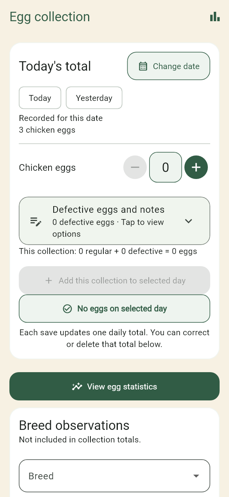
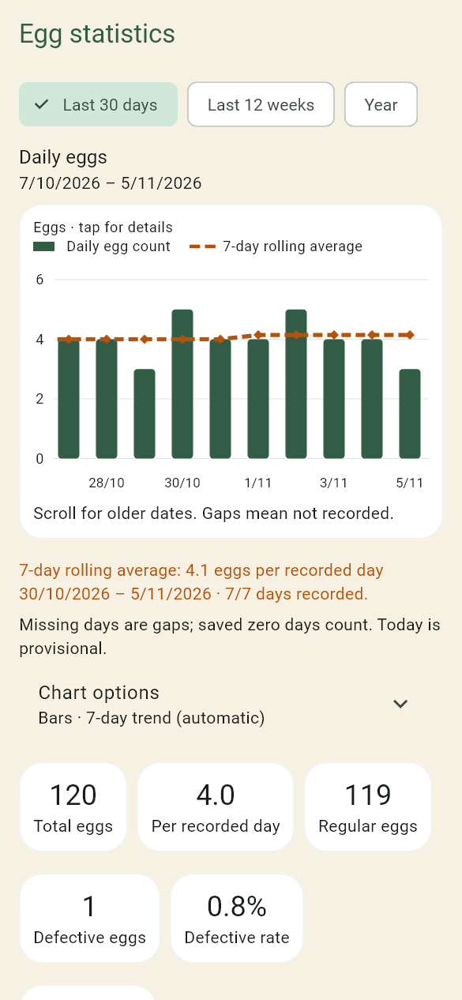
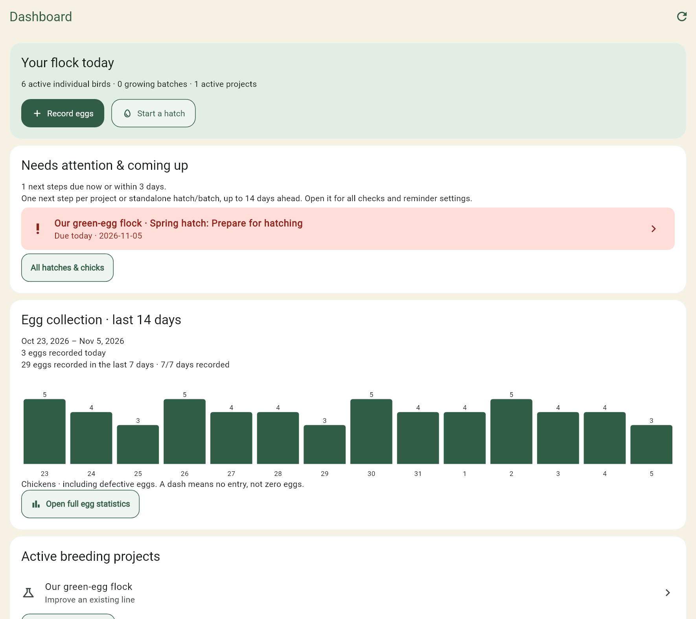
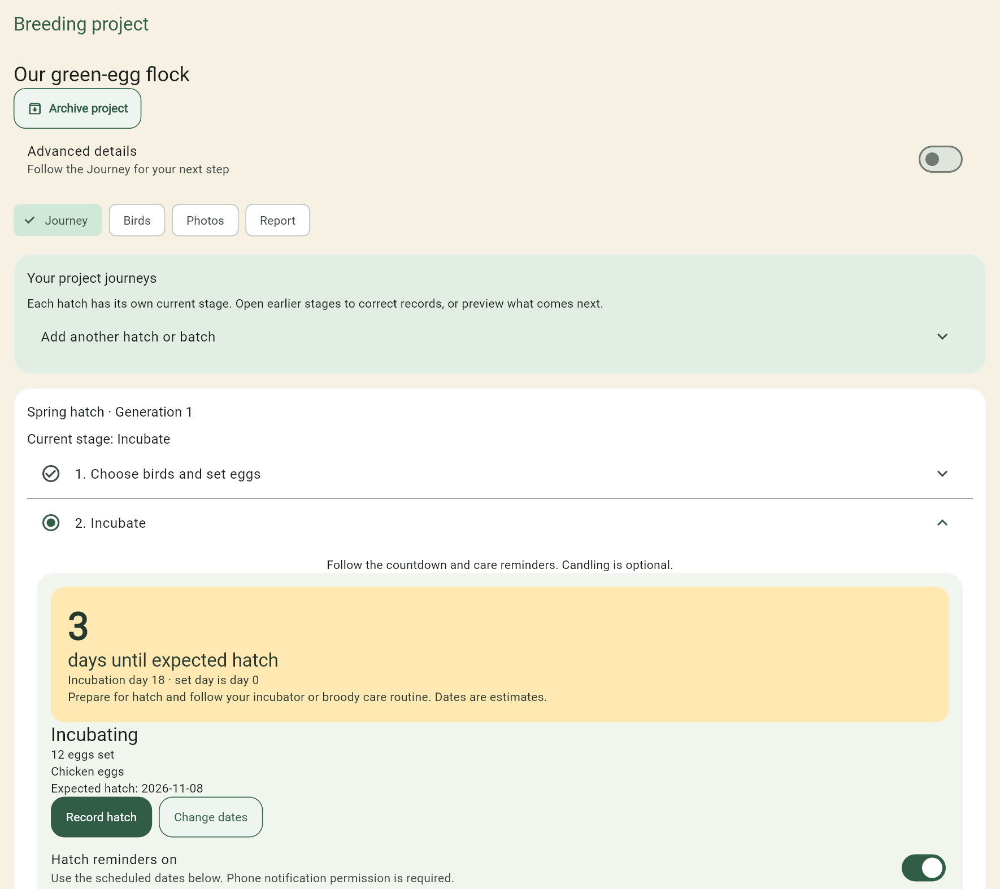

Names or bird codes
Use a name, your own ring or band code, or both. Choose codes first in Settings. Track breed, species, sex, hatch date and photos without exposing database numbers.
From the coop to your computer
Start with a few birds and today’s eggs. Add hatch records, family lines and a breeding project when you need them.
Screen previews use fictional sample records in the current app screens at phone and desktop sizes. The web app includes the latest features; public Android and iPhone releases may lag behind closed testing. Breeding Projects is in development. The outlined egg-options panel is in the next mobile update.
A small daily habit
Add a collection in a few taps, or type a larger count. Record a zero when you collected none; leave an unrecorded day blank. Defective eggs and collection notes have their own expandable panel.
See daily production, weekly or monthly groups, a trend suited to the selected range and how many days were actually recorded. Missing entries are not silently counted as zero.


The web dashboard
Open the dashboard for a flock summary, the last fortnight’s egg graph and active breeding projects. Due work is highlighted, with one next step for each project or separate hatch or chick batch.
Open a reminder to see its full timeline. Use the left menu to jump to your flock, pecking order, family trees, flocks and pens, Breeding Projects, Hatches & chicks, eggs or Flock Runner.
Recorded changes sync between linked devices with cloud access. The status banner and History & sync show whether anything is waiting, rather than assuming a backup means every device is current.
Use the dashboard →
Breeding Projects · Plus · In development
Choose a goal, select birds and start a hatch inside the project. Follow the current stage: set eggs, incubate, record hatch, watch chicks grow, then review the results.
A large countdown makes the expected hatch date easier to follow. Care reminders start enabled for guided hatches, with dates based on the eggs’ set date and species. Candling is optional; ticking a check does not require an observation form.
Keep reference photos at each stage and compare generations in a project report. Advanced details expose pairing strategy, measurements and selection evidence when you want them. Archive finished or abandoned projects to keep your active list clear.
The app records evidence and supports your decisions. It does not guarantee a trait, egg colour, hatch result or breeding outcome.
Try the complete example workflow →
Use a name, your own ring or band code, or both. Choose codes first in Settings. Track breed, species, sex, hatch date and photos without exposing database numbers.
Record observed dominance and best friends. The flock map can show loops, while snapshots preserve earlier observations.
Link parents and offspring, retain ancestor-only records and follow chick batches into individual birds. Full Breeder adds pen headcounts and movement history.
Play between coop visits. On the web, use the arrow keys to jump and duck. The games page also links to Boulder Slider.
The phone app is free to start and works locally without an account. Store prices and availability are shown before purchase.
| Option | What it adds |
|---|---|
| Hobby | Core flock records within the free allowance, eggs and egg-history CSV, pecking-order relationships, basic chick batches and local backups. |
| Home Breeder · one-time | Unlimited individual records, extra photos, deeper pedigrees, breeder exports and guided hatch monitoring. |
| Full Breeder · one-time | Home Breeder plus pen headcounts, movements and pen-specific records and reminder intervals. |
| Pecking Order Plus · subscription | All breeder tools while subscribed, Breeding Projects, cloud backup, record/photo sync and web access. One-time purchases remain yours after the subscription ends. |
Record allowances cover all retained full bird records, including deceased, sold, rehomed and missing birds. One-time purchases do not expire. Plus access lasts while subscribed; an event preview ends at its verified trial expiry and does not start automatic billing.
Make your first entry